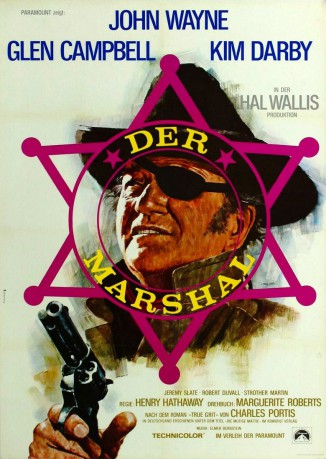

Alternativ: True Grit
Auszeichnungen: 1 Oscars gewonnen für 1 Oscars nominiert 1 GoldenGlobes gewonnen
 
 IMDB-Wertung: 7.4 / 10
IMDB-Wertung: 7.4 / 10  Metascore:
Metascore: 
Mattie Ross kommt nach Fort Smith, um die Leiche ihres Vater zu identifizieren und dessen Geschäfte zu regeln. Da die Behörden nicht viel Mühe darauf verwenden, den Mörder zu suchen, engagiert sie für 100 Dollar Marshall Rooster J. Cogburn, einen einäugigen, eisenharten alten Trunkenbold, vor dem man sie ausdrücklich gewarnt hatte. Ihnen schließt sich der Texas Ranger La Boeuf an, der sich die Kopfprämie verdienen will. Zu dritt reiten sie los und liegen schon bald in ständigem Streit. Rooster Cogburn fühlt sich entnervt von Matties Tüchtigkeit und noch mehr von den texanischen Aufschneidereien La Boeufs.
Jahr: 1969
Dauer: 128 Minuten
FSK: 12
Land: USA Studio: Paramount A Gulf+Western CompanyTonspuren: DD1.0 - ,
Untertitel: Deutsch,
Auflösung: 1080p (1920x1080) Größe: 12185 MB
Genre: Drama, Abenteuer, Western
Regisseur: Henry Hathaway
Drehbuch: Charles Portis, Marguerite Roberts
Soundtrack: Elmer Bernstein
Darsteller:
 John Wayne als Rooster Cogburn
John Wayne als Rooster Cogburn Robert Duvall als Ned Pepper
Robert Duvall als Ned Pepper Dennis Hopper als 'Moon'
Dennis Hopper als 'Moon' Strother Martin als Col. G. Stonehill
Strother Martin als Col. G. Stonehill Jeff Corey als Tom Chaney
Jeff Corey als Tom Chaney John Fiedler als Lawyer Daggett
John Fiedler als Lawyer Daggett John Doucette als 'Sheriff'
John Doucette als 'Sheriff' Wilford Brimley als Minor Role , uncredited
Wilford Brimley als Minor Role , uncredited James McEachin als Judge Parker's Bailiff , uncredited
James McEachin als Judge Parker's Bailiff , uncredited Hank Worden als R. Ryan - Undertaker , uncredited
Hank Worden als R. Ryan - Undertaker , uncredited James Westerfield als Judge Parker
James Westerfield als Judge Parker Carlos Rivas als Dirty Bob
Carlos Rivas als Dirty Bob John Pickard als Frank Ross
John Pickard als Frank Ross Gene Coogan als Boarding House Guest , uncredited
Gene Coogan als Boarding House Guest , uncredited Jeffrey Sayre als Courtroom Spectator , uncredited
Jeffrey Sayre als Courtroom Spectator , uncredited Dean Smith als Minor Role , uncredited
Dean Smith als Minor Role , uncredited Max Wagner als Courtroom Spectator , uncredited
Max Wagner als Courtroom Spectator , uncredited Guy Wilkerson als The Hangman , uncredited
Guy Wilkerson als The Hangman , uncreditedDatei: X:\HD-Western-Collections\John Wayne\Marshal, Der (1969, FSK12, 1920x1080).mkv seit 03.07.2015
Festplatte: HD Eastern+Western
 Es gibt insgesamt 34 Filme in der Gruppe 'HD-Western-Collections\John Wayne'
Es gibt insgesamt 34 Filme in der Gruppe 'HD-Western-Collections\John Wayne'